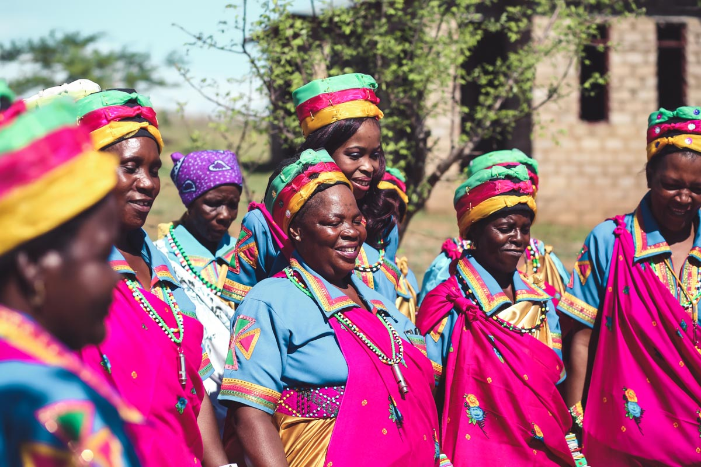

Overview
Mozambique, located in southeastern Africa, is known for its rich natural resources, including coal, gas, and valuable minerals, which play a key role in its economy. Mozambique borders Tanzania, Malawi, Zambia, Zimbabwe, South Africa, and Eswatini. The country boasts a stunning coastline along the Indian Ocean, featuring coral reefs, islands, and vibrant marine life. Mozambique’s cultural landscape is a fusion of African and Portuguese influences, stemming from its colonial history. The country’s modern history has been shaped by its fight for independence from Portugal in 1975 and a long civil war that followed. Despite these challenges, Mozambique’s capital, Maputo, remains a bustling port city and the economic heart of the nation, showing resilience and growth over time.

History
Mozambique's historical narrative encompasses the migration of Bantu-speaking groups around 400 AD and the formation of trade networks by 1000 AD. The Portuguese began to exert their influence in 1498, achieving substantial control over trade routes by the period of 1500 to 1700. The struggle for independence from Portuguese colonial rule occurred between 1964 and 1974, culminating in the country's independence in 1975. This period was subsequently marked by a civil conflict that lasted from 1977 until 1992. In the years following the civil war, Mozambique has experienced significant political transformations, including the transition to a multi-party political system in 1990, alongside ongoing challenges posed by a jihadist insurgency.
Culture
Mozambique is characterized by a variety of ethnic groups, with classifications that have evolved due to its colonial past. The Makua-Lomwe, Tsonga, Sena, among others, populate the area, which is geographically divided by the Zambezi River into matrilineal societies in the northern region and patrilineal societies in the southern region. Over the years, numerous matrilineal communities have transitioned to patrilineal structures. While Portuguese is commonly spoken, especially in urban areas, Bantu languages such as Makua, Tsonga, and Sena are predominant. This linguistic diversity is indicative of Mozambique's interactions with neighboring nations, contributing to its vibrant cultural tapestry.
Customs
Mozambican culture is fundamentally anchored in familial and communal traditions, shaped more by regional customs than by overarching national ideologies. Despite the disruptions caused by civil conflict, which included governmental resistance to practices such as polygamy and initiation ceremonies, numerous traditional customs have endured. The typical daily diet frequently features staples such as cassava and cornmeal porridge, often served with sauces like matapa. The culinary landscape also reflects Indian and Portuguese influences, as seen in popular dishes like chicken piri-piri and rice pilaf. Additionally, the availability of fresh fruits such as mango and papaya enhances the nutritional variety of the local diet.